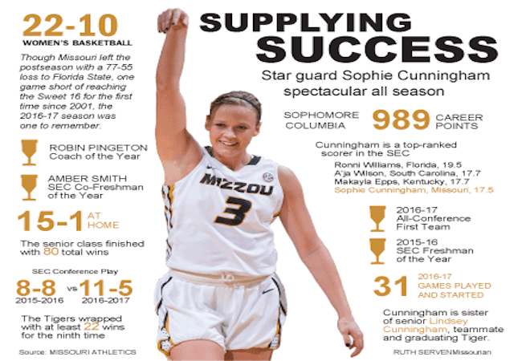

FREELANCE WORK
I write regular industry articles for Take Command Health, a leading platform for professionals and small business owners who want to make the most of new health insurance products. Here's one example: "How 2021 ACA Premiums Changes Will Affect the HRA Marketplace"
I also do regular freelance work for the hyper-local outlet Charlottesville Tomorrow, and am looking for ways to continue reporting on healthcare and education across the American South.
Recent Charlottesville Tomorrow stories have included an explainer of the University of Virginia's plans to test returning students and coverage of its plans to dedicate 1,500 beds to quarantine and isolate students if necessary.
EDITORIAL WORK
As an assistant city editor in the Daily Progress' newsroom, I guided daily and long-term decisions about coverage. On day shifts, I edited copy and ensured that assignments, submissions and online presentation were running smoothly. During night shifts, I also wrote headlines, cutlines, chose wire copy and signed off on the final print product.
DAILY BREAKING NEWS, ENTERPRISE AND FEATURES REPORTING
During my two years as a health and higher education reporter, I reported on fallout from white supremacist rallies, institutional turnover at the University of Virginia, and efforts to increase diverse enrollment. My reporting contributed to policy changes and adjustments, including UVa's decision to stop suing and increase assistance for low-income people struggling to pay medical bills; its decision to extend in-state tuition and aid to DREAMers; and its decision to increase the minimum wage for low-income employees. My reporting won awards from the Virginia Press Association and the Virginia Association of Trial Lawyers.
INTERACTIVES AND GRAPHICS
In addition to writing, I have supplemented my reporting with interactive timelines and graphics. I'm interested in using data and visual storytelling to engage readers and display information in a variety of ways.

I've created a variety of interactive and print graphics to accompany stories. Some accompany hard news stories, like this graphic built with Tableau that accompanied a story about the decreasing amount of state funding for higher education.

Others, like this graphic, accompanied breakdowns of stories and added visual interest to a story.

SIDE HUSTLE
In addition to journalism, I write short stories, fiction and creative nonfiction. One of my short stories, "A Message," was published by Epiphany this year, and received the PEN America Emerging Writers Award.